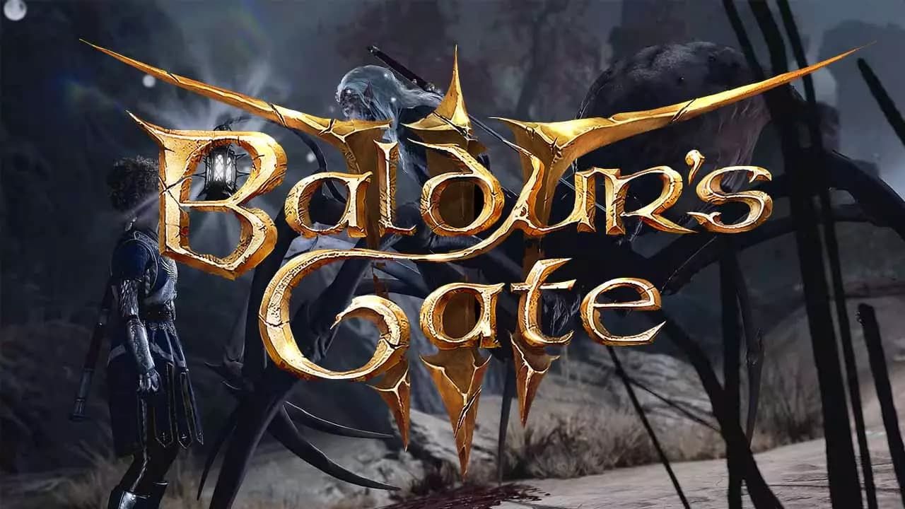
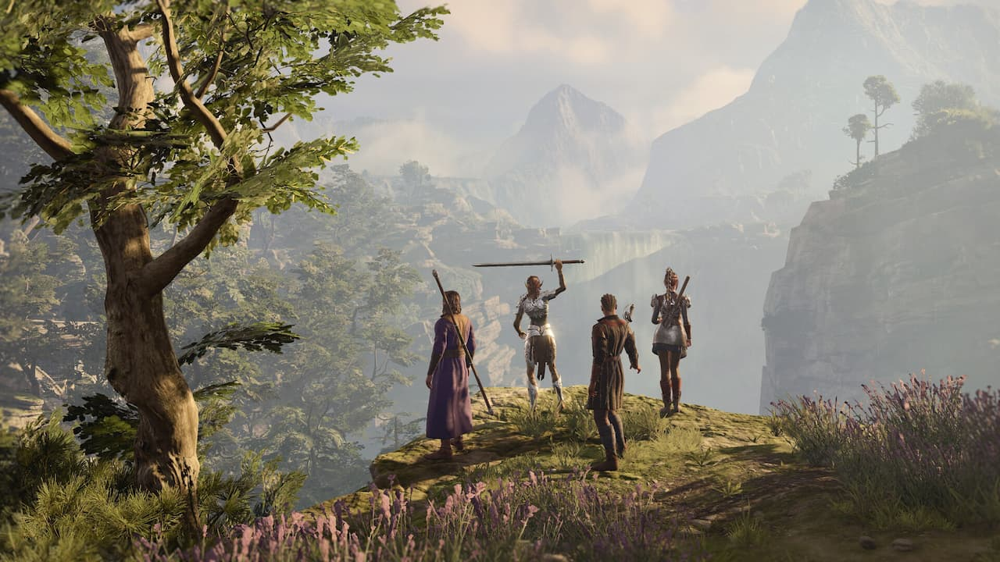

El nuevo Titán de Rol sigue dando de qué hablar
Los belgas de Larian Studios esperaban que el público estuviera cansado tras el acceso anticipado.
Ni el más optimista podía esperar el éxito inicial que está teniendo Baldur’s Gate 3, que en sus primeros días está arrasando no solo en cuanto a cifras de ventas, sino en lo relacionado con la opinión de los jugadores y la prensa especializada. De hecho, ha alcanzado picos de jugadores simultáneos en Steam completamente salvajes, equiparables a los de los juegos que siempre copan las listas de los más jugados, como CS: GO, DOTA 2 o GTA V, por ejemplo. Tan sorprendente ha sido esta recepción, que ni siquiera en Larian Studios se la esperaban.
Baldur’s Gate 3 ha pasado nada menos que tres años en Early Access, y tras ese periodo, los belgas no esperaban que el público estuviera tan ansioso por aventuras. “Hemos visto esto en el pasado, juegos que son muy exitosos durante su acceso anticipado, y luego en su lanzamiento no venden mucho porque los jugadores ya están saturados. Ese era mi mayor miedo, que eso ocurriera”, ha confesado Swen Vincke, líder de Larian Studios, en una entrevista con el medio PC Gamer.
El título superó “con creces" los diez millones de jugadores en un “muy corto espacio de tiempo”
“Esto no estaba previsto, no de la manera en que esperábamos”, continúa Vincke. “Tampoco hay precedentes de ello, que haya muchos jugadores concurrentes en este tipod e juego... Todo el mundo aquí está muy contento, puedes ver muchas caras sonrientes. Al mismo tiempo, mucha concentración. Tenemos reportes de gente teniendo problemas, así que estamos centrados en resolverlos, eso es lo que todo el mundo tiene en mente”.
Y es que las cifras son absolutamente abrumadoras. Para hacernos una idea, el anterior juego de Larian Studios, Divinity: Original Sin II -ojo, con un 93 en Metacritic-, alcanzó un pico de jugadores concurrentes de 90.000. No está mal, pero es que Baldur’s Gate 3 ha llegado a nada menos que 814.466, y aún queda por llegar a PlayStation 5.
Marcando el camino
“No creo que esto cambie mucho. Estamos en el camino que queríamos estar”, explica Wincke. “De hecho un poco más lento, porque los eventos de los últimos años han ralentizado el desarrollo para todo el mundo, pero esto es lo que queremos hacer: RPG dirigidos por el jugador, traerlos de una manera inmersiva, lo que conlleva traerlos de una manera más cinemática. Con Baldur’s Gate 3 damos el siguiente paso en ese camino, y continuaremos construyendo sobre él. Eso es lo que queremos hacer”.
Mientras que Larian Studios incrementa su equipo para hacer nuevos juegos, el equipo encargado del éxito se prepara para incluir una de sus funciones más solicitadas. Al fin y al cabo, Baldur's Gate 3 no es un juego que se acabe en pocas horas, aunque todo mod y contenido adicional ayudará a que sus jugadores continúen disfrutando de su fascinante mundo repleto de ideas.